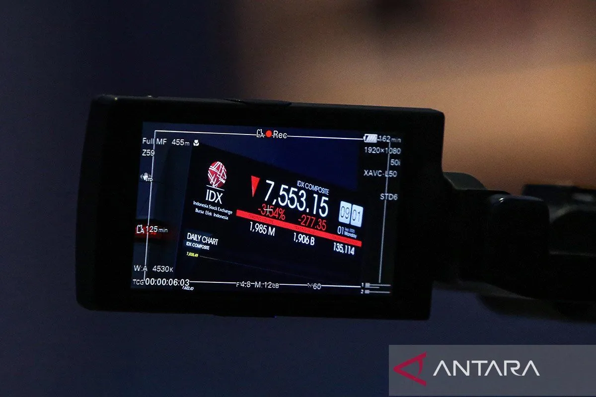
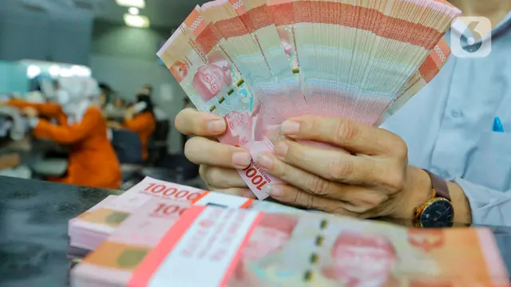

BERITA TERIKINI
1 Tahun Pemerintahan Prabowo, Airlangga: Pertumbuhan Ekonomi Jadi Salah Satu yang Tertinggi di G20.

IHSG naik seiring kenaikan proyeksi pertumbuhan ekonomi RI.

Rupiah Loyo terhadap Dolar AS Hari Ini 8 Oktober 2025 Tersengat Komentar Pejabat The Fed.